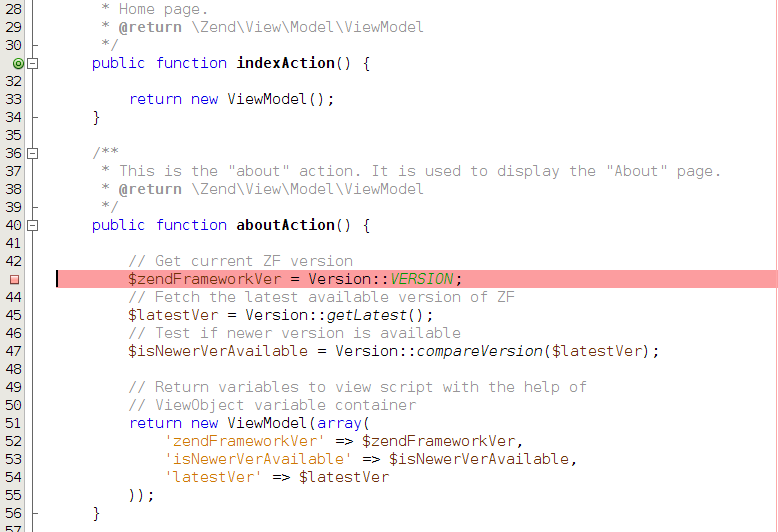

Breakpoints
Typically, you set one or several breakpoints to the lines which you want to debug in step-by-step mode. To set a breakpoint, put your mouse to the left of the line of code where you want the breakpoint to appear and click on the line number. Alternatively, you can put the cursor caret to the line where you want to set a breakpoint and press CTRL+F8 key combination.
When you set the breakpoint, the line is marked with red color and a small red rectangle appears to the left of it (shown in figure B.7):
 Figure B.7. Setting a breakpoint
Be careful not to set a breakpoint on an empty line or on a comment line. Such a breakpoint will be ignored by XDebug, and it will be marked by the "broken" square (see figure B.8 for example):
 Figure B.8. Inactive breakpoint
Figure B.8. Inactive breakpoint
You can travel between breakpoints with the F5 key press. This button continues program execution until it encounters the next breakpoint. Once the program flow comes to the breakpoint, the PHP interpreter becomes paused, and you can review the state of the program.
You can see the complete list of breakpoints you have set in the Breakpoints window (see figure B.9). The Breakpoints window is located in the bottom part of NetBeans window. In this window you can add new breakpoints or unset breakpoints that have already been set.
 Figure B.9. Breakpoints window
Figure B.9. Breakpoints window